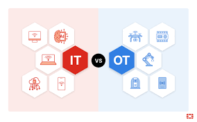

¿Qué es la digitalización?
La digitalización industrial consiste en integrar tecnologías digitales en todos los procesos productivos para mejorar eficiencia, calidad y flexibilidad.

IT vs OT: Los dos pilares
IT (Tecnologías de la Información)
Gestión de datos, software, comunicaciones y sistemas de información dentro de la empresa.
OT (Tecnologías Operativas)
Control de procesos industriales, maquinaria, sensores y sistemas de producción en planta.
Tecnologías clave
- Internet de las cosas (IoT)
- Big Data y analítica
- Inteligencia Artificial
- Robótica avanzada
- Realidad aumentada y virtual

Ventajas de la digitalización end-to-end
- Mayor eficiencia operativa
- Reducción de errores y costes
- Mejora en la calidad del producto
- Toma de decisiones basada en datos
Impacto en la organización
La digitalización transforma roles, procesos y cultura de la empresa, promoviendo colaboración entre áreas y un enfoque ágil e innovador.